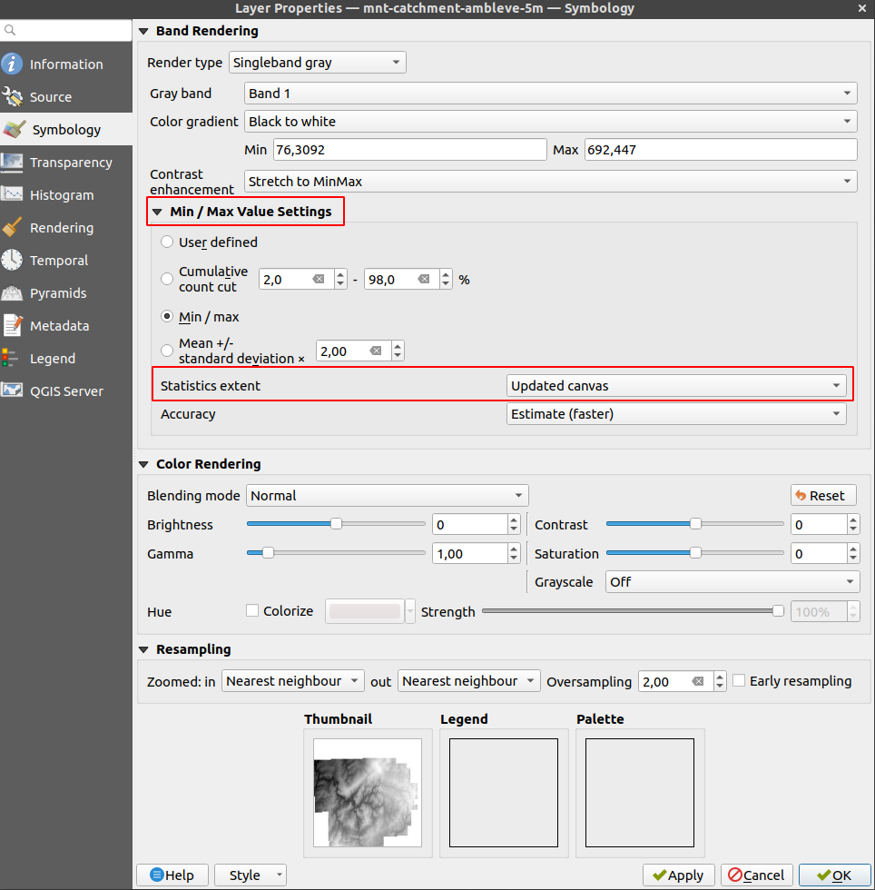
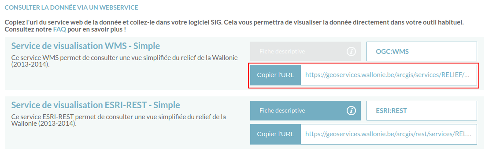
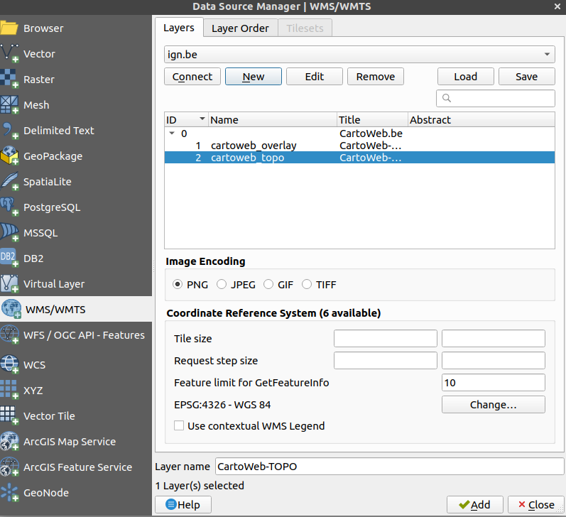
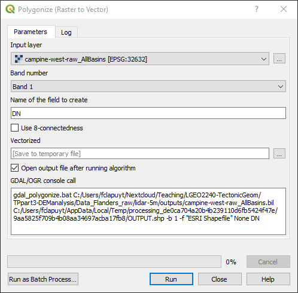
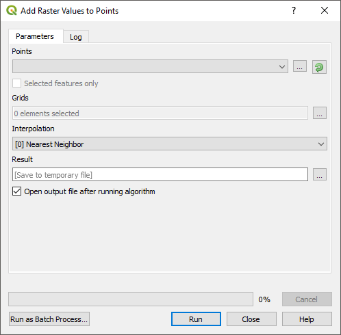
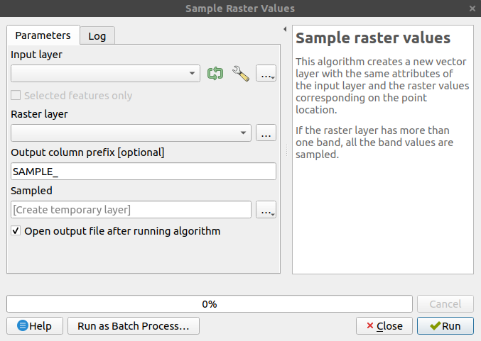

.shp for vector data and .tif for raster data. For raster data, it might also be .sgrd or .sdat, depending on the toolboxes that you run.Some common coordinate system EPSG identifiers:
| Coordinate system | EPSG ID |
|---|---|
| WGS 84 | 4326 |
| WGS 84 - Pseudo-Mercator (Google / OSM WMS data) | 3857 |
| Belgian Lambert 72 | 31370 |
| Belgian Lambert 2008 | 3812 |
| UTM 31 N (covers Belgium) | 32631 |
| UTM 32 N (covers the most eastern part of Belgium, i.e. High Fens and Cantons de l’Est) | 32632 |
Single-band raster datasets are usually rendered using a color ramp from black to white. In practice, it means that the range of values contained in the datasets is stretched over the black to white gradient. If the distribution of these values is not relatively constant over the entire range, e.g. the majority of values is less than 1000 while only a few pixels have very large values (e.g. > 10^6), the GIS will render a completely black layer. This might be caused by a mis-interpretation of no data values in digital elevation models. It is also typical for flow accumulation data (few large values in rivers while majority of hillslopes have low values).
To properly render such raster datasets, the idea is to ask QGIS to render values only on the currently visible range of pixel values. To do so:
Open the properties of the layer.
Open the “Symbology” tab.
In the “Min/Max Value Settings” section, define “Statistics Extent” as “Updated canvas” in the dropdown menu.

Zoom in on small portions of the DEM. You will see that the colour of the pixels will adapt to the range of the visible elevation.
If the “Processing Toolbox” panel has disappeared, simply go to the “Menu Processing > Toolbox”.
You can add base layers, e.g. OpenStreetMap, using the plugin “QuickMapServices” plugin in QGIS.
GIS resources may be stored on GIS servers. This is often the case in companies, public administrations,… where several people need to access up-to-date versions of spatial datasets. Such datasets can potentially be accessed using the Web Map Service (WMS) protocol by external users, directly in their local GIS software. To do that, you need the url of the WMS and, if applicable, the credentials.
WMS adresses are usually stored in metadata of spatial datasets. For instance, wms of WalonMap data are accessible in the “Fiche descriptive > Accès” of each data.

Two lists of WMS in Belgium:
In practice, in QGIS, for the IGN cartoweb layer:
Click “New” and enter these parameters.
| Setting | Value |
|---|---|
| Name | IGN |
| URL | http://wms.ngi.be/inspire/topomaps/service?version=1.3.0 |
Choose which layer you want to add in your project and click “Add”.

Based on a csv file containing coordinates, you can create a layer to be spatialised in QGIS, e.g. channel network outputs from LSDTopoTools.
This tool is useful to create polygons defining the extent of river catchments, because LSDTopoTools provides a raster as output.
Define which raster you need to process and run…

You can extract raster values at the location of points, defined by a shapefile. To do so, use the tool “Add raster values to poitns”, available in the menu “Processing > Toolbox”. Either search by name or find in the the toolbox structure: SAGA > Vector / Raster.

If the “Add raster values to points” does not work properly, an built-in QGIS alternative is the “Sample Raster Values”.
